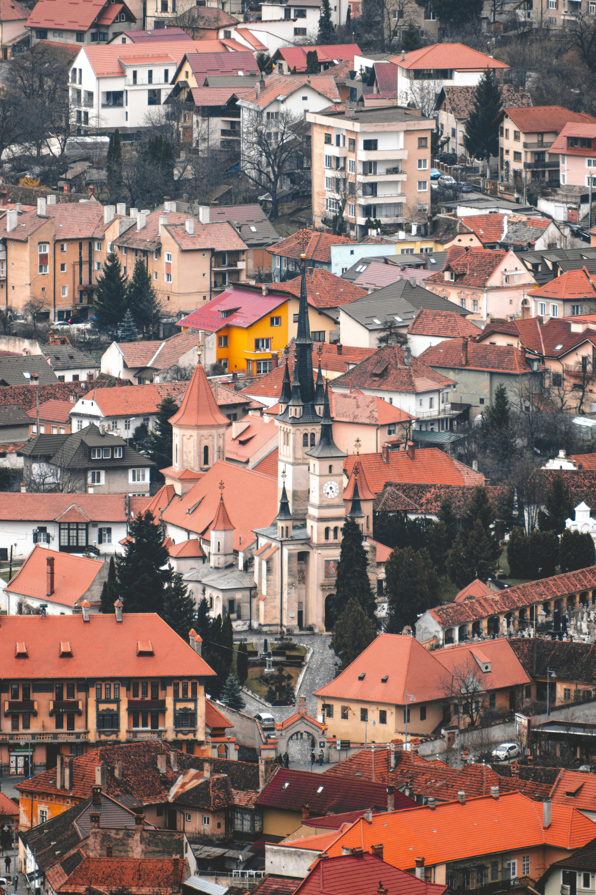
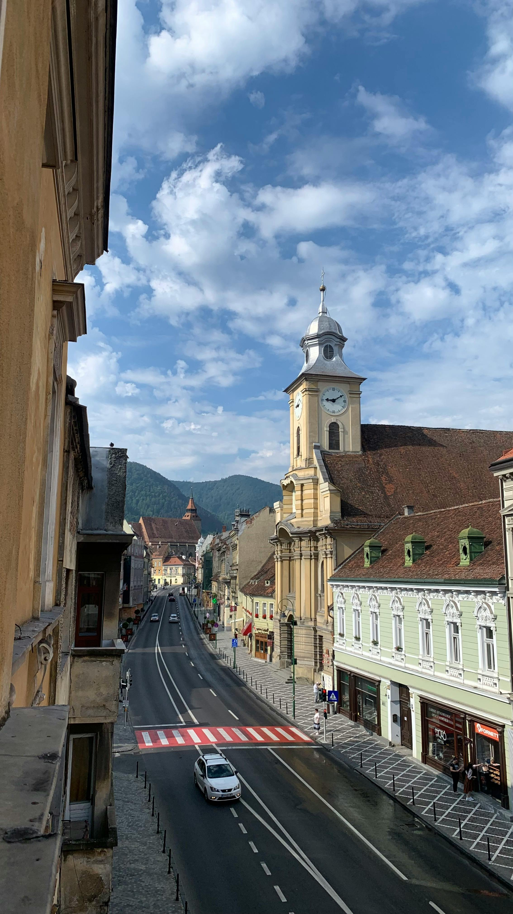
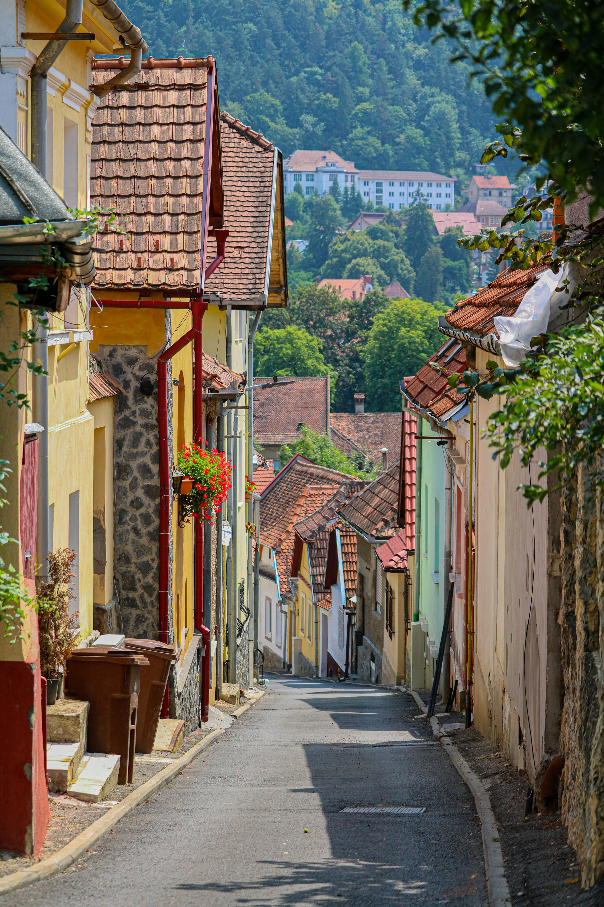

Travel Information
Planning a trip to Brașov is relatively straightforward, and the city is well connected to other major destinations in Romania. Visitors can enjoy the city throughout the year, but a few practical tips can make the experience smoother and more enjoyable.
How to Get to Brașov
Brașov can be reached by train, coach, or car from major Romanian cities such as Bucharest, Sibiu, and Cluj-Napoca. Many travellers arrive from Bucharest, which offers direct rail and road connections. The journey is popular because it combines convenience with scenic views along the way.
Best Time to Visit
Brașov is attractive in every season. Spring and summer are ideal for walking, sightseeing, and mountain activities, while autumn offers beautiful colours and a calmer atmosphere. Winter is popular for festive city breaks and access to nearby mountain resorts.
Getting Around
The historic centre of Brașov is easy to explore on foot, which makes walking one of the best ways to experience the city. For longer distances, visitors can use taxis, buses, or ride apps. Comfortable shoes are recommended, especially for streets with slopes or cobbled surfaces. View Transport Tickets & Routes
Helpful Travel Tips
- Carry comfortable shoes for walking around the old town.
- Bring layers, as mountain weather can change quickly.
- Keep some local currency (Romanian Lei) for smaller purchases.
- Book popular attractions or experiences in advance during busy seasons.
Where to Stay
Brașov offers a wide range of accommodation options, from budget hostels to boutique hotels and traditional guesthouses. Visitors can choose to stay in the historic centre for easy access to attractions or in quieter areas for a more relaxed experience.
Find AccommodationTravel Gallery
These images reflect the atmosphere of travelling in and around Brașov, from scenic views to local streets and everyday visitor experiences.


